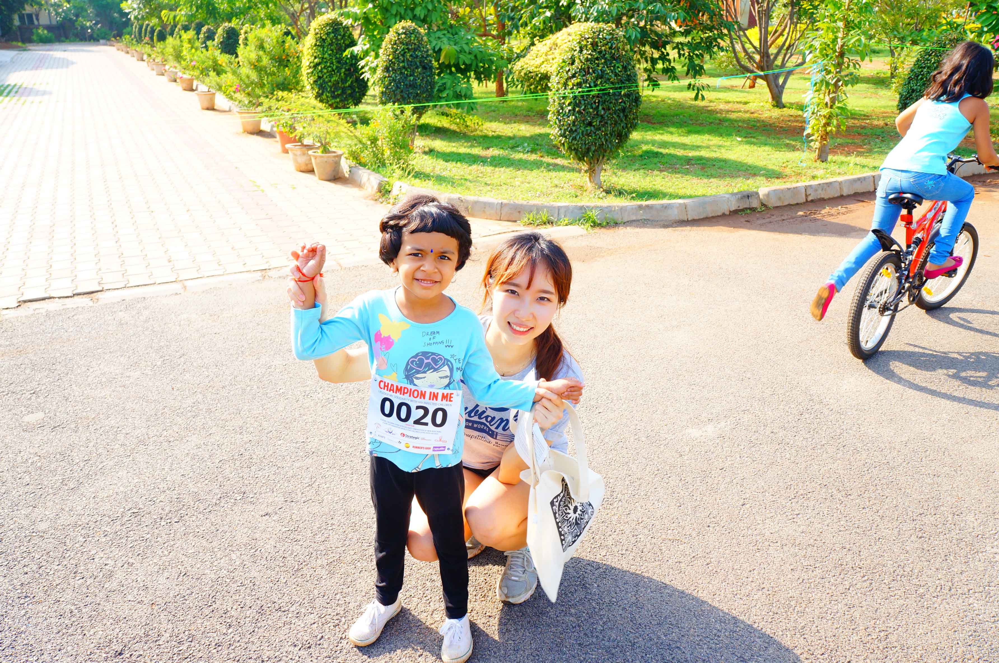

15기
15기

남궁혜지
<전공>
Emertxe에서 교육을 받은 지도 4~5개월이 됐다. 그 동안에 Linux을 접했고 C언어, 자료구조, Micro-controllers를 배웠다. 짧다면 짧은 시간이었지만 깊이 있고 다양한 공부를 할 수 있어 좋았다. 한국에서 C언어를 배웠었지만 그 때의 배움은 6개월도 안되는 한 학기의 수업 하나 였고, 깊이 배웠다고 생각하지 않는다. 그러나 이 곳에서 다시 배웠을 때 Emertxe 강사들의 열정도 보았고, 그들의 자부심도 느낄 수 있었다. 그렇게 하나씩 배워갔고 자바와는 다르게 시험도 많이 보고 프로젝트도 많이 했다. 지금은 Micro-Controllers를 배우는 과정 중에 있다. Micro-Controllers는 마더보드를 이용하는 수업인데 그 동안 우리 과에서는 전혀 배우지 않았던 과정이라 수업에 따라 갈 수 없었다. 같이 수업을 듣는 정보통신학과 학생들의 경우 학교에서 이미 수업을 들은 경험이 있어서 나보다는 수월하게 수업을 듣는 것 같다. 그래서 앞으로 임베디드 과정을 선택할 사람이라면 이 쪽 관련 수업을 많이 듣는 것을 추천한다. 예를 들면 C언어는 물론이고 운영체제, 컴퓨터구조, 임베디드수업 등 깊이 있게 공부해 오길 바란다.
I have been learning for 4~5 month in Emertxe. Meanwhile, I learned Linux, C-language, Data Structure, Micro-Controllers. I’m satisfied with this study because this is deep and has a lot of variety. I’m taught C-language already. But that time I thought that I didn’t learn many things. However, When I was learning again, I saw the instructor’s passion, I could feel their pride too. And we had many tests and too many projects unlike JAVA class .Nowadays we are studying Micro-controllers. Micro-controllers is used in the Motherboard, but I’m not used to Motherboards. My major doesn’t teach Embedded. So Sometimes I’m confused. I advice Embedded juniors that before you come to India, please learn a bit about Embedded. This way it will be easier to start your studies in India without much confusion.